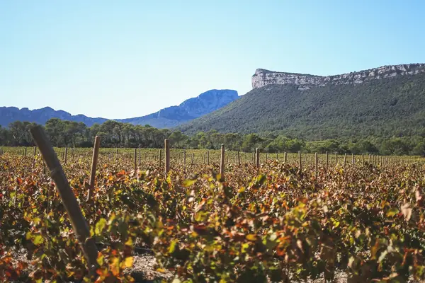

Home › Grapes › Garnacha / Grenache
Garnacha / Grenache grape

Photo: Morgane Le Breton on Unsplash
Garnacha / Grenache is a red grape known for strawberry, cherry, spice. Its best-known homes are Spain, Rhône, Sardinia.
Primary flavours
- Strawberry
- Cherry
- Spice
- Raspberry
Taste profile
Origin and history
Most likely from Aragon in north-east Spain, then spread through the Crown of Aragon to Sardinia, Roussillon and the southern Rhône.
Where it grows
Spain (Priorat, Campo de Borja, Calatayud, Cariñena, Navarra, Rioja), the southern Rhône (Châteauneuf-du-Pape, Gigondas), Roussillon, Sardinia and McLaren Vale and Barossa in Australia.
Structure
Medium to full body, light to medium colour, high alcohol, moderate to low acidity and soft tannins.
Aromas, young and aged
Young: strawberry, raspberry, red cherry, white pepper and dried herbs (garrigue). With age: leather, tar, toffee and dried fruit.
Ageing
Most best within 2–6 years; old-vine Priorat and Châteauneuf can age 15–25.
Also known as
Garnacha Tinta, Grenache Noir, Cannonau (Sardinia), Garnatxa (Catalonia).
Good to know
It makes Roussillon's fortified sweet wines Banyuls and Maury, and is the 'G' in Australian GSM blends with Syrah and Mourvèdre.
Wine regions for Garnacha / Grenache
Garnacha / Grenache wines to try
Real bottles from The Wine Library.
E. Guigal Côtes du Rhône Rouge
Rhône Valley · Côtes du Rhône · Syrah / Shiraz, Garnacha / Grenache, Mourvèdre
Generous and peppery: dark berries, spice and soft tannins.
Food: Sausages, cassoulet, pizza
Château de Beaucastel Châteauneuf-du-Pape Rouge
Rhône Valley · Châteauneuf-du-Pape · Mourvèdre, Garnacha / Grenache, Syrah / Shiraz
Deep and savoury: black fruit, garrigue herbs, leather and spice.
Food: Game, slow-cooked lamb
La Rioja Alta Viña Ardanza Reserva
Rioja · Rioja Alta · Tempranillo, Garnacha / Grenache
Classic oak-aged Rioja: strawberry, vanilla, leather and spice.
Food: Roast lamb, chorizo
Álvaro Palacios L'Ermita
Priorat · Garnacha / Grenache, Carignan
Old-vine Garnacha on slate: dark cherry, herbs and a mineral core.
Food: Lamb, grilled meats
Celler de Capçanes Mas Donís
Montsant · Garnacha / Grenache, Syrah / Shiraz
Juicy, sun-warmed Garnacha with ripe cherry, herbs and soft tannins. Easy and generous.
Food: Pizza, grilled sausages, lamb chops
Bodegas Borsao Borsao Tres Picos
Campo de Borja · Garnacha / Grenache
Rich, velvety Garnacha from Moncayo foothills, raspberry, kirsch and a touch of spice.
Food: Grilled lamb, roast vegetables, chorizo
Bodegas Ateca Atteca Old Vines
Calatayud · Garnacha / Grenache
Old-vine high-altitude Garnacha, dark cherry, liquorice and a fresh mineral lift.
Food: Braised beef, lamb skewers, hard cheese
Bernabeleva Navaherreros
Vinos de Madrid · San Martín de Valdeiglesias · Garnacha / Grenache
Elegant granite-grown Garnacha from the Gredos mountains, red fruit, herbs and fine tannins.
Food: Roast pork, game birds, mushroom dishes
Jiménez-Landi Sotorrondero
Méntrida · Syrah / Shiraz, Garnacha / Grenache
Ripe black fruit and pepper from granite hills near Toledo, polished by gentle oak.
Food: Roast lamb, venison stew, aged cheese
Familia Torres Grans Muralles
Conca de Barberà · Garnacha / Grenache, Carignan, Monastrell
Torres flagship from old Poblet vineyards with native varieties: dark fruit, herbs, minerals and great depth.
Food: Roast suckling lamb, game pie, truffled dishes
Château d'Aqueria Tavel
Rhône Valley · Tavel · Garnacha / Grenache, Cinsault, Clairette
Deep, structured rosé with redcurrant, strawberry and spice; a rosé for the table.
Food: Bouillabaisse, grilled lamb, paella
Castillo Perelada Garnatxa de l'Empordà
Traditional sweet Garnatxa, amber and nutty with raisin, fig and toffee notes.
Food: Catalan cream, dried fruit, blue cheese
Bodegas Muga Rosado
Rioja · Garnacha / Grenache, Viura, Tempranillo
Pale, dry Rioja rosé with redcurrant, peach and a crisp, lightly herbal finish.
Food: Patatas bravas, grilled sardines
Château de Pibarnon Bandol Rouge
Provence · Bandol AOC · Mourvèdre, Garnacha / Grenache
High, amphitheatre-shaped limestone terraces give a Mourvèdre of rare finesse: black olive, garrigue, plum and leather, with firm tannins that soften over a decade or more.
Food: Daube provençale or roast leg of lamb
Clos Mogador Clos Mogador
Priorat · Priorat DOQ · Garnacha / Grenache, Carignan, Syrah, Cabernet Sauvignon
One of the pioneering 1989 Priorat estates: black fruit, liquorice and mountain herbs, with the warm power of old Garnacha cut by the mineral bite of llicorella slate.
Food: Roast lamb shoulder with rosemary
Mas Amiel Maury Vintage
Languedoc-Roussillon · Maury AOC · Garnacha / Grenache
Young fortified Grenache bottled early for freshness: black cherry, kirsch and cocoa with supple, sweet tannins.
Food: Dark chocolate tart, blue cheese
Acústic Celler Acústic Negre
Montsant · Montsant DO · Garnacha / Grenache, Carignan
Old-vine Garnatxa and Samsó: ripe cherry, garrigue herbs and a cool, stony freshness that keeps the fruit lively.
Food: Lamb chops on vine cuttings, botifarra sausage
Jiménez-Landi Piélago
Méntrida · Méntrida DO · Garnacha / Grenache
High-altitude Gredos Garnacha on granite: raspberry, pine and crushed rock, translucent and fine-grained rather than heavy.
Food: Roast partridge, jamón ibérico
Comando G La Bruja de Rozas
Vinos de Madrid · Vinos de Madrid DO · Garnacha / Grenache
Village Garnacha from Rozas de Puerto Real: pure red berries, wild herbs and floral lift on a light, silky frame.
Food: Cocido madrileño, grilled quail
Food to pair with Garnacha / Grenache
- Shepherd's pie: Peppery, juicy Grenache and Shiraz match savoury lamb mince and gravy without overwhelming a homely dish.
- Toad in the hole: Soft, juicy Merlot and Grenache have enough fruit for pork sausages and onion gravy, with gentle tannins that suit the batter.
- Venison stew: Gamey venison loves Syrah's dark fruit, pepper and smoky notes, and Grenache-led Rhône blends add warmth for a winter stew.
- Ratatouille: A Provençal dish deserves Provençal wines: dry rosé or a supple Grenache red matches the herbs, tomato and olive oil.
- Lamb tagine with apricots: Warm spices, apricots and lamb suit ripe, spicy Grenache and Syrah blends, whose soft fruit embraces the sweetness.
- Chocolate fondant: Chocolate overwhelms most dry wines, so choose a sweet fortified red; ruby or LBV Port has the sweetness and dark fruit to match.
- Shakshuka: Spiced tomato and peppers suit a dry rosé or a juicy, low-tannin red that won't clash with the cumin and chilli.
- Lamb rogan josh: Warmly spiced but not fiery, this lamb curry suits soft, fruit-forward reds with peppery notes and gentle tannins.
Appellations that use Garnacha / Grenache
- Granada DO · Granada · Red
- Campo de Borja DO · Campo de Borja · Red
- Calatayud DO · Calatayud · Red
- Cariñena DO · Cariñena · Red
- Cigales DO · Cigales · Rosé
- Cebreros VC · Cebreros · Red
- Méntrida DO · Méntrida · Red
- Montsant DO · Montsant · Red
- Empordà DO · Empordà · Red
- Terra Alta DO · Terra Alta · White
- Alella DO · Alella · White
- Tarragona DO · Tarragona · Red
- Catalunya DO · Catalunya · Red
- Vinos de Madrid DO · Vinos de Madrid · Red
Similar red grapes
Explore all grapes in the interactive guide
The Wine Reference newsletter
New wines, stories and career guides, one email a week at most.
Over 18s only. Unsubscribe any time with one click. Your email is stored securely by Kit and never shared.
Support The Wine Reference
This guide is free, with no paywall. If it helped you choose a bottle, you can buy me a glass and keep it growing.
🍷 Buy me a glass